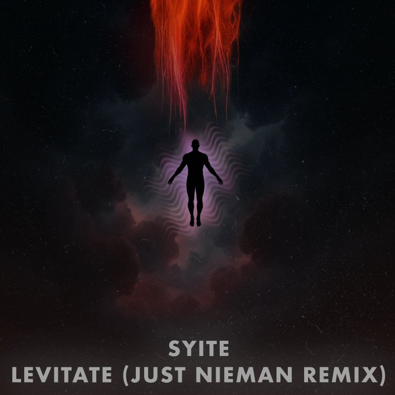

NORF FLIP
10k+ plays on SoundCloud.
soundcloud.com/just-nieman/norf-flipElectronic Press Kit
Asheville, NC DJ and Producer
Bass | Tech House | Open Format Energy

Artist Story
Just Nieman is an Asheville-based DJ and producer moving between bass and tech house. He has been active in the local scene since 2017 and is also a co-founder of Pluto Events, a crew bringing underground sounds to new spaces around Asheville.
Nieman played his first set at a Halloween house party in 2017, repeated it the following year, and doubled down on music in 2021 as a way to rebuild and rediscover himself. That chapter led to regular gigs at Asheville Beauty Academy from late 2021 through 2022.
In 2023, he launched Pluto Events with friends to push the local underground forward. The project is rooted in self-discovery, connection, and turning nightlife into something more than escape. Releases like "Lives," "My Music," and "It's Not That Deep" reflect that ethos across multiple electronic styles.
Music
10k+ plays on SoundCloud.
soundcloud.com/just-nieman/norf-flip
Personal favorite release in the catalog.
distrokid.com/hyperfollow/justnieman/its-not-that-deep
2.1k+ plays on SoundCloud.
soundcloud.com/just-nieman/syite-levitate-just-nieman-remix
Official release.
distrokid.com/hyperfollow/justnieman/my-music
Official release.
distrokid.com/hyperfollow/justnieman/lives
Official release.
distrokid.com/hyperfollow/justnieman/personalLive

"My project is about self-discovery and connection. I want each set to celebrate the beauty of human connection."
Press Photos


Booking + Tech
Email: contact@niemans.website
Location: Asheville, North Carolina
Website: just.niemans.website
Instagram: @justnieman
SoundCloud: soundcloud.com/just-nieman
Full technical rider and advance details available on request.